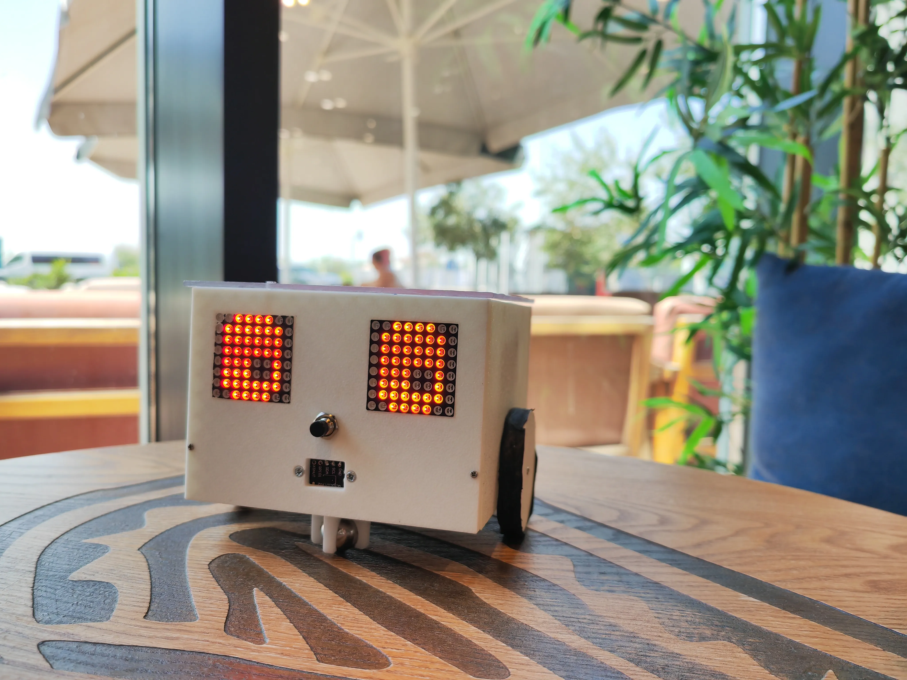
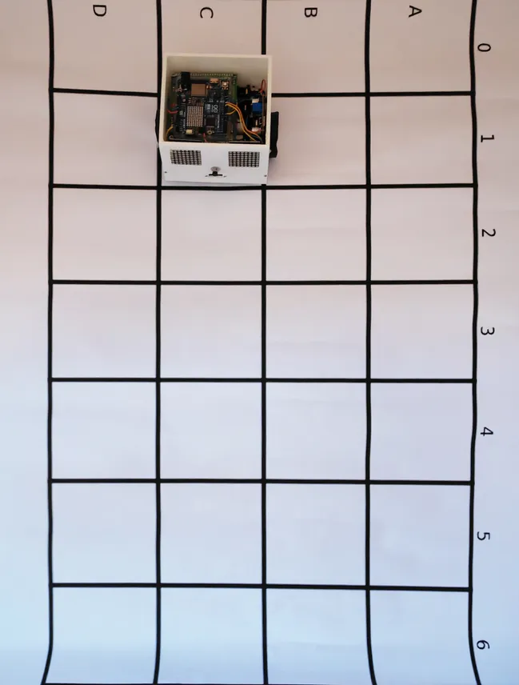

Acest robot a apărut dintr-o nevoie: îmi doream o metodă interactivă prin care să pot dezvolta logica copiilor mai puțin norocoși, aflați în grija statului. Este un proiect născut din empatie, creat pentru a le oferi un instrument de gândire printr-un design prietenos, cu doi ochi mari care clipesc.
This robot emerged from a need: I wanted an interactive method to develop the logic of less fortunate children in state care. It is a project born out of empathy, created to provide them with a thinking tool through a friendly design, featuring two big blinking eyes.

Copilul ghidează robotul de la punctul A la punctul B. În partea din spate, robotul are fante pentru a atașa un marker cu un elastic, astfel încât să deseneze prin intermediul comenzilor. Se creează o corelație directă între formele matematice și structura logică a codului, oferind o perspectivă mai amplă asupra învățării.
The child guides the robot from point A to point B. On the back, the robot has slots to attach a marker with a rubber band, allowing it to draw through commands. This creates a direct correlation between mathematical shapes and the logical structure of the code, offering a broader perspective on learning.

Deoarece Flutter nu suportă nativ Blockly, am integrat acest WebView care comunică bidirecțional cu aplicația și robotul. Joacă-te chiar aici cu simulatorul: trage blocurile de cod în spațiul de lucru si vezi cum comenzile prind viata!
Since Flutter doesn't natively support Blockly, I've integrated this WebView for two-way communication between the app and the robot. Play right here with the simulator: drag the code blocks into the workspace and watch the commands come to life!
Totul este transparent pentru a încuraja curiozitatea. Elementele carcasei se îmbină prin tehnici inspirate din arhitectura japoneză, oferind modularitate și un timp scurt de printare 3D.
Everything is transparent to encourage curiosity. The casing elements interlock using techniques inspired by Japanese architecture, offering modularity and a short 3D printing time.
Vezi cum comenzile digitale se transformă în mișcare fizică. Este momentul în care teoria devine practică, iar logica din spatele ecranului prinde viață sub ochii tăi.
Watch how digital commands transform into physical movement. It's the moment when theory becomes practice, and the logic behind the screen comes to life before your eyes.
Am dezvoltat un robot educațional ieftin comparativ cu alternativele comerciale, folosind un șasiu ce amintește de personajele din Minecraft. Sunetele simpatice emise de buzzer și componentele la vedere stârnesc curiozitatea și invită la idei de îmbunătățire.
I developed an affordable educational robot compared to commercial alternatives, using a chassis reminiscent of Minecraft characters. The cute sounds emitted by the buzzer and the exposed components spark curiosity and invite ideas for improvement.